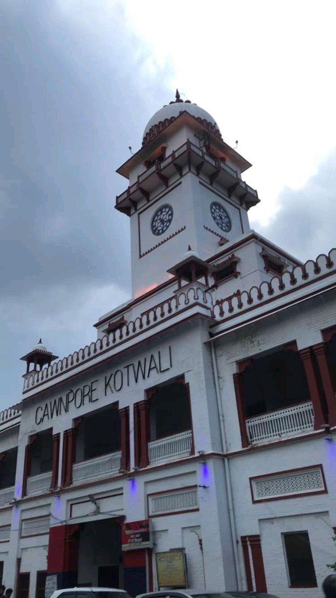
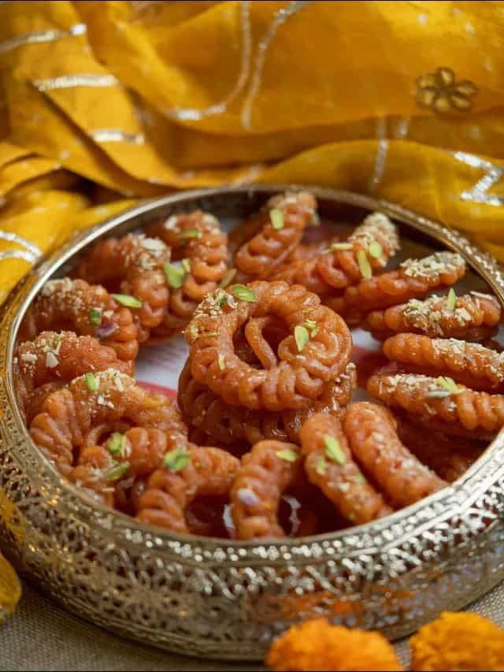
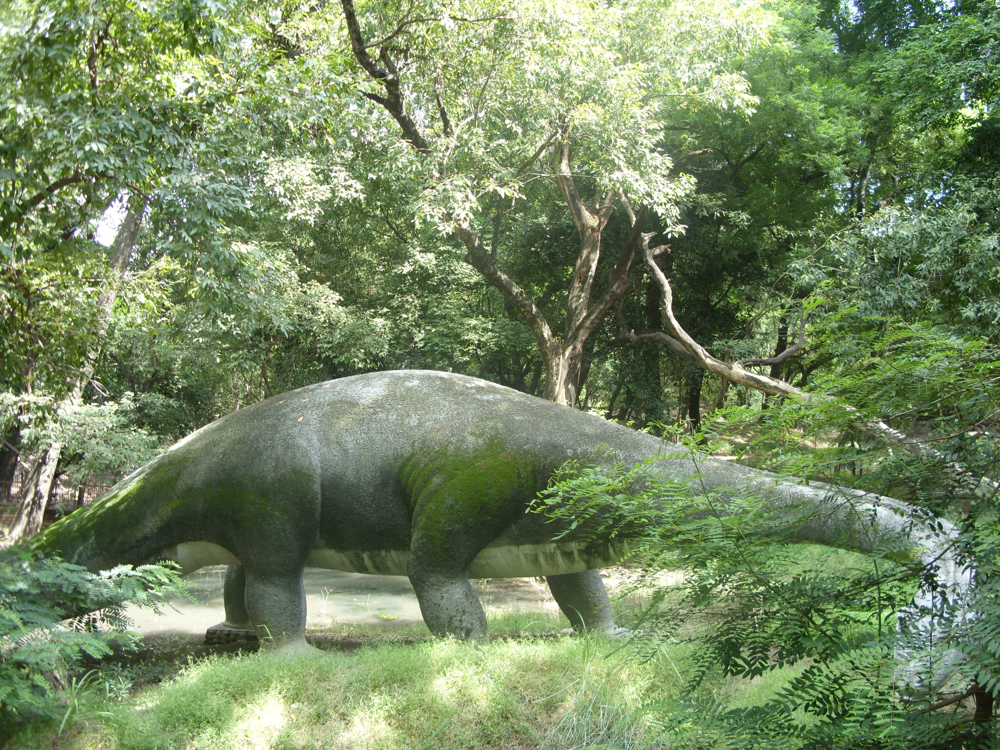

Historic View of Cawnpore
A rare glimpse of the city as it looked in the late 19th century, preserving its colonial charm.

Iconic Clock Tower
A landmark from the British era, the Clock Tower has witnessed Kanpur's transformation over the decades.

Sacred Ganga River
Flowing through Kanpur, the Ganga has been the lifeline for culture, faith, and livelihood for centuries.

ISKCON Temple
A modern spiritual center devoted to Lord Krishna, known for its serene atmosphere and grand architecture.

J.K. Temple Architecture
An iconic blend of ancient and modern styles, symbolizing Kanpur's architectural heritage.

Memorial Church
Built in memory of those who fell during the events of 1857, this Gothic-style church is a historic treasure.

Imarti
A Kanpur speciality, deep-fried into floral rings and drenched in saffron syrup, reflecting the city's rich sweet-making heritage.

Traditional Sultani Dal
A royal Awadhi delicacy, slow-cooked to perfection, representing the city’s rich culinary tradition.

Zoological Park
Popularly known as Allen Forest Zoo, this lush green space is home to diverse wildlife and exotic species.
J.K. Temple
Dedicated to Radha and Krishna, the temple is admired for its pristine white structure and intricate carvings.

City Museum
Preserving artifacts, photographs, and documents that narrate Kanpur’s cultural and historical journey.

Historic Railway Station
A bustling transit point since colonial times, showcasing vintage railway architecture.

Lal Imli Textile Mill
One of the oldest textile mills in North India, pivotal to Kanpur’s reputation as the 'Manchester of the East'.